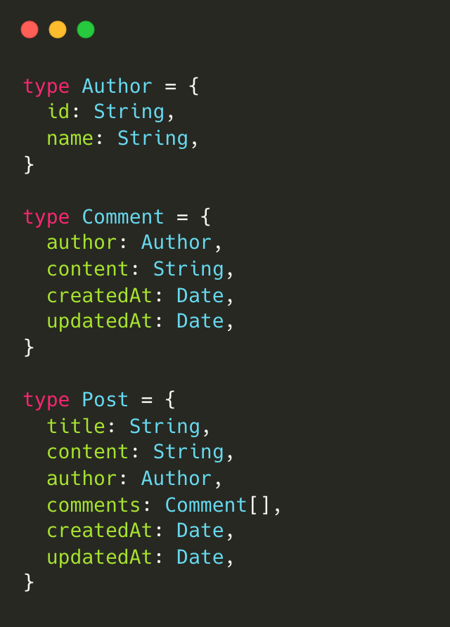

How to build a Data Intensive Application from scratch?
Eyes: Taiwanese Public Opinion Mining System
Sean Chang
Who am I?
Sean Chang
- Experiences
- Software Engineer, TSMC
- Data Scientist, KKLab (KKBOX)
- Interests: #data, #software
- Languages: #python, #typescript, #golang, #scala, #java
Data Intensive Application
Data-intensive computing
- Variety, Velocity, Volume
- Compute-intensive
Software-as-a-Service (SaaS)
The Twelve-Factor AppUser Story
| As a | I want to | So that |
|---|---|---|
| Sean | 看看最近哪些文章很紅 | 需要一個熱門文章列表 |
| Sean | 看看特定的人事物最近發生什麼事 | 需要一個事件時間軸 |
| Sean | 看看特定的人事物最近跟誰有關 | 需要一個關係圖 |
| ... | ... | ... |
Domain Modeling
- System Blueprint
- Declarative Business Logics


Architecture
- Storage, Computing Power
- Horizontal Scalability
- Distributed Computing
- Cloud Native
Crawler
Data Access Object (DAO)

Natural Language Processing (NLP)
Message Queue
Celery
Celery Task Definition
Celery Task Monitor
Periodic Pipelines
API
Web
Eyes Core Functions
Eyes + Sidecars
Cloud Native
Helm (Declarative System)

Helm Deployment
Demo
Observability
- System Health Check
- SLI, SLO, SLA